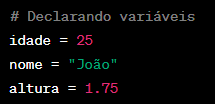
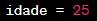
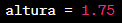
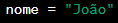
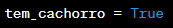
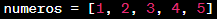
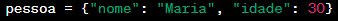
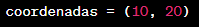
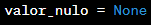

Algoritmos
Variáveis:
Uma variável é um espaço de armazenamento nomeado que pode conter um valor. Esses valores podem ser modificados durante a execução de um programa. Em muitas linguagens de programação, você precisa declarar uma variável antes de usá-la, especificando seu nome e o tipo de dado que ela irá armazenar.
Exemplo em Python:
idade é uma variável do tipo inteiro (int).
nome é uma variável do tipo string (str).
altura é uma variável do tipo ponto flutuante (float).

Tipos de Dados Comuns:
Inteiro (int):
Armazena números inteiros, como 1, -5, 100.

Ponto Flutuante (float):
Armazena números decimais, como 3.14, -0.5, 2.0.

String (str):
Armazena sequências de caracteres, como "Olá, mundo!", "abc123".

Booleano (bool):
Armazena valores lógicos True ou False.

Lista (list):
Armazena uma coleção ordenada de itens.

Dicionário (dict):
Armazena pares chave-valor.

Tupla (tuple):
Semelhante a uma lista, mas é imutável (não pode ser alterada após a criação).

NoneType (None):
Representa a ausência de valor.

Observações Importantes:
A escolha do tipo de dado depende do tipo de informação que você está manipulando.
Algumas linguagens de programação são fortemente tipadas, o que significa que o tipo de dado de uma variável não pode ser alterado depois de ser definido. Outras são fracamente tipadas, permitindo maior flexibilidade na mudança de tipos.
Além desses tipos básicos, muitas linguagens de programação oferecem estruturas de dados mais complexas e tipos customizados.